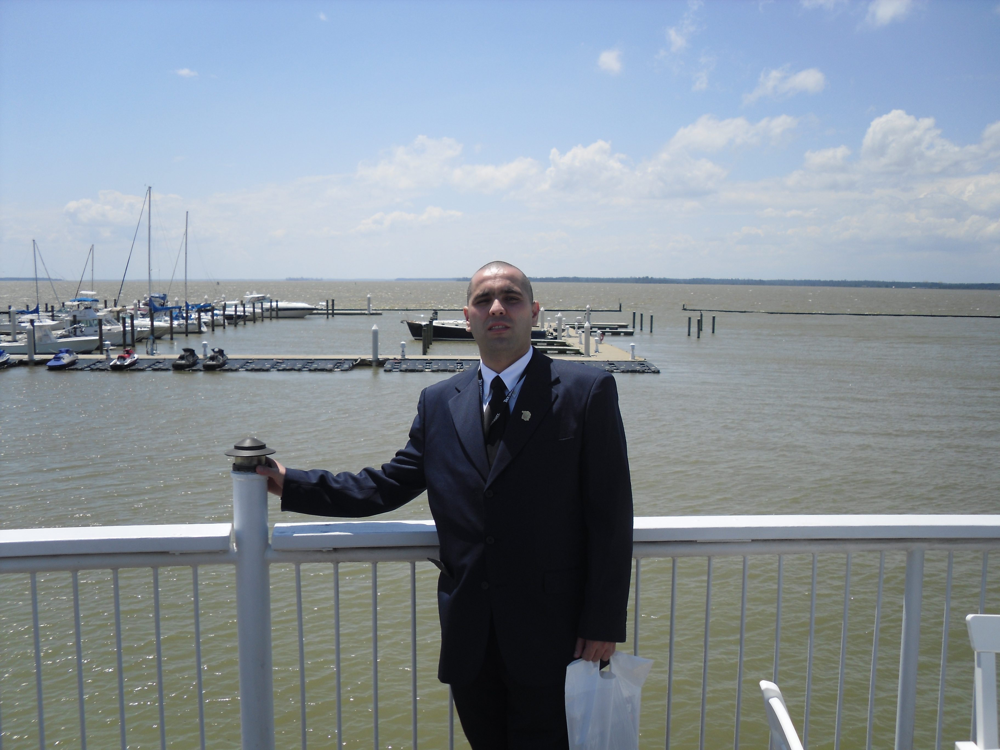

Hakim Guidoum is the senior support Tech at Implus footcare in Durham, NC which is one of the leading companies in Footcare products. To develop additional skills, Hakim begins a 24-week coding program through Case Western Reserve University in June of 2019. There he will build a portfolio of web applications, learning HTML5, CSS3, JavaScript, Java, MySQL, Command Line, Git, and more.
Hakim was born and raised in Algeria where he graduated with a master’s degree in International relations from the university of Algiers. In 2006 , Hakim moved to the U.S where he went back to get another master’s in Public Administration from North Carolina Central University in 2012. In 2015, He decided to get into the IT field after completing the A+ and Network+ certificates. He first IT job was a Level 1 support Tech at Implus Footcare in Durham, NC. Currently Hakim is the senior Support Tech at Implus and pursuing the UNC Coding Bootcamp.